Legal hypergraphs: the paper workflow in honets
Source:vignettes/legal-hypergraphs.Rmd
legal-hypergraphs.RmdCoupette, Hartung and Katz (2024) model legal relations as temporal hypergraphs: a citation block binds every decision it cites to the decision that cites them, and a tribunal binds its three arbitrators for as long as the case runs. The paper works through two datasets, the citation blocks of the German Federal Constitutional Court (GFCC) and the tribunals of the International Centre for Settlement of Investment Disputes (ICSID), and applies three families of methods to them: hyperedge centralities, motifs against a configuration null, and communities of a weighted projection. This vignette reproduces that workflow in honets on the authors’ released data, figure by figure. Hypergraph construction and mathematics are native to honets; once a projection is an ordinary graph, cograph supplies the graph algorithms and the drawing.
Data
Both datasets ship with honets, rebuilt from the authors’ Zenodo
archive (record 8081507, CC BY-NC 4.0) by
data-raw/legal_hypergraphs.R. icsid_tribunals
has one row per tribunal seat: the case, the arbitrator who held the
seat, the dates on which the tribunal was constituted and the case
concluded, and the case metadata. A pending case has no conclusion
date.
head(icsid_tribunals)
#> case seat arbitrator registered constituted
#> 1 ARB/74/1 arbitrator_1 Jacques Michel GROSSEN 1974-03-06 1974-10-07
#> 2 ARB/74/1 arbitrator_2 Dominique PONCET 1974-03-06 1974-10-07
#> 3 ARB/74/1 president Pierre CAVIN 1974-03-06 1974-10-07
#> 4 ARB/74/2 arbitrator_1 Michael KERR 1974-06-21 1974-12-16
#> 5 ARB/74/2 arbitrator_2 Fuad ROUHANI 1974-06-21 1974-12-16
#> 6 ARB/74/2 president Jørgen TROLLE 1974-06-21 1974-12-16
#> concluded is_concluded economic_sector subject
#> 1 1977-08-29 TRUE Other Industry Production of fibers and textiles
#> 2 1977-08-29 TRUE Other Industry Production of fibers and textiles
#> 3 1977-08-29 TRUE Other Industry Production of fibers and textiles
#> 4 1977-02-27 TRUE Oil, Gas & Mining Bauxite mining
#> 5 1977-02-27 TRUE Oil, Gas & Mining Bauxite mining
#> 6 1977-02-27 TRUE Oil, Gas & Mining Bauxite mining
#> respondent
#> 1 Côte d'Ivoire
#> 2 Côte d'Ivoire
#> 3 Côte d'Ivoire
#> 4 Jamaica
#> 5 Jamaica
#> 6 Jamaicagfcc_decisions has one row per decision with its date,
and gfcc_citations one row per citation: the citing
decision, the cited decision, the citation block the citation belongs
to, and the dates of both decisions.
head(gfcc_decisions)
#> decision date citation type
#> 1 001-001 1951-09-09 BVerfGE 1, 1-3 Beschluss
#> 2 001-003 1951-09-27 BVerfGE 1, 3 Beschluss
#> 3 001-004 1951-09-27 BVerfGE 1, 4-5 Beschluss
#> 4 001-005 1951-09-27 BVerfGE 1, 5-7 Beschluss
#> 5 001-007 1951-10-03 BVerfGE 1, 7-8 Beschluss
#> 6 001-009 1951-10-11 BVerfGE 1, 9-10 Beschluss
#> title
#> 1 Neugliederung im Gebiet der Länder Baden, Württemberg-Baden und Württemberg-Hohenzollern gemäß Art. 118 GG ("Südweststaat" ): Aussetzung der Volksabstimmung durch einstweilige Anordnung
#> 2 Keine Geltendmachung von Schadensersatzansprüchen mittels Verfassungsbeschwerde
#> 3 Voraussetzungen der Verfassungsbeschwerde gegen rechtskräftige gerichtliche Entscheidungen
#> 4 Keine Verfassungsbeschwerde gegen auf Grund der Entnazifizierungsgesetze ergangene Entscheidungen
#> 5 Verfassungsbeschwerde gegen rechtskräftige Entscheidungen ordentlicher Gerichte: Umfang der Überprüfung durch das BVerfG
#> 6 Keine Verfassungsbeschwerde gegen nichtbeschwerdefähige gerichtliche Entscheidungen, die der Urteilsfällung vorausgehen
head(gfcc_citations)
#> citing cited block date_citing date_cited
#> 1 001-001 001-014 001-001:000 1951-09-09 1951-10-23
#> 2 001-005 001-004 001-005:000 1951-09-27 1951-09-27
#> 3 001-066 001-014 001-066:000 1951-10-02 1951-10-23
#> 4 001-074 001-322 001-074:000 1951-11-13 1952-05-28
#> 5 001-085 001-117 001-085:000 1951-11-27 1952-02-20
#> 6 001-202 001-184 001-202:000 1952-03-20 1952-03-20Models
temporal_hypergraph() reads co-presence data the way
Dynet does: actor names the node column and
group the column whose shared value binds actors into one
hyperedge, here the case. start and end give
the interval on which the hyperedge is active, the paper’s
interval-event model. The dates become days since the first
constitution, the unit and origin the object reports. A case without a
conclusion date stays active through the end of observation, which the
paper sets at its cut-off, 2023-06-15; observation_end
declares that window without rewriting the data. Every other column that
is constant within a case, such as the economic sector, is kept as an
attribute of the hyperedge; the seat, which varies within a case, is
not.
tribunals <- temporal_hypergraph(
icsid_tribunals, actor = "arbitrator", group = "case",
start = "constituted", end = "concluded",
observation_end = as.Date("2023-06-15")
)
tribunals
#> Temporal hypergraph: 441 nodes, 742 hyperedges, 1076 event times
#> Format: interval (a hyperedge is active from its start to its end)
#> Time: days since 1974-10-07; observed from 0 to 17783 (declared)
summary(tribunals)
#> n_nodes n_hyperedges n_event_times first_time last_time n_memberships
#> 1 441 742 1076 0 17782 2226
#> mean_edge_size median_edge_size mean_duration format time_unit
#> 1 3 3 1303.436 interval daysThe citation table is the same shape: the cited decision is the actor
and the citation block the group. A block has a single
time, the date of the decision that contains it, so it is a
contact hyperedge: an instantaneous event, as in a contact log. The
paper’s point-aggregation model, in which a block stays in the network
once it has appeared, is not a property of the data but a way of looking
at it, and it is asked for below with mode = "cumulative".
The citing decision is constant within a block, so citing
becomes the block’s attribute. The decision table is the node universe,
so that a decision exists from its own date whether or not it has been
cited. sparse = TRUE stores the 46,257 by 3,618 incidence
as a sparse matrix.
blocks <- temporal_hypergraph(
gfcc_citations, actor = "cited", group = "block", time = "date_citing",
nodes = gfcc_decisions, sparse = TRUE
)
blocks
#> Temporal hypergraph: 3618 nodes, 46257 hyperedges, 2026 event times
#> Format: contact (a hyperedge is an instantaneous event; mode = "cumulative" keeps every hyperedge once it appears)
#> Time: days since 1951-09-09; observed from 0 to 25762
summary(blocks)
#> n_nodes n_hyperedges n_event_times first_time last_time n_memberships
#> 1 3618 46257 2026 0 25762 77284
#> mean_edge_size median_edge_size mean_duration format time_unit
#> 1 1.670753 1 NA contact daysThe two summaries are the paper’s Table 1: 742 cases with 441 arbitrators and 2,226 memberships, and 46,257 citation blocks with 77,284 memberships over 2,026 decision dates between 1951 and 2022. The paper counts 1,077 event times for ICSID because it adds its cut-off date as the end of every pending case; here those cases have no end.
Four representations of the same data
hypergraph_snapshot() with
mode = "cumulative" and no at returns the
static aggregate of a temporal hypergraph, every hyperedge begun by the
end of observation, as a net_hypergraph that every static
verb accepts.
tribunals_all <- hypergraph_snapshot(tribunals, mode = "cumulative")
tribunals_all
#> Hypergraph: 441 nodes, 742 hyperedges
#> Size distribution:
#> size_3 : 742
#> Source: group membership (member = member, group = edge)
blocks_all <- hypergraph_snapshot(blocks, mode = "cumulative")
blocks_all
#> Hypergraph: 3618 nodes, 46257 hyperedges
#> Size distribution:
#> size_1 : 30887
#> size_2 : 7759
#> size_3 : 3787
#> size_4 : 1880
#> size_5 : 922
#> size_6 : 513
#> size_7 : 220
#> size_8 : 130
#> size_9 : 61
#> size_10 : 35
#> size_11 : 26
#> size_12 : 12
#> size_13 : 6
#> size_14 : 5
#> size_15 : 2
#> size_16 : 3
#> size_17 : 3
#> size_18 : 3
#> size_19 : 2
#> size_27 : 1
#> Source: group membership (member = member, group = edge)hg_representations() reports an aggregate the four ways
the paper’s Table 2 reads it: the multi-hypergraph as it is
(mh), the binary hypergraph of distinct member sets
(bh), and the graph the hypergraph reduces to, with
(mg) or without (bg) edge multiplicities. For
the tribunals the graph is the clique expansion, in which every pair of
members of a tribunal is an edge.
hg_representations(tribunals_all)
#> representation type n_nodes n_edges mean_degree median_degree
#> 1 bg graph 441 1869 8.476190 4
#> 2 mg graph 441 2226 10.095238 4
#> 3 bh hypergraph 441 722 4.911565 2
#> 4 mh hypergraph 441 742 5.047619 2For the citation blocks the graph is the citation graph, in which the
citing decision is joined to every decision in the block;
graph = "citation" selects it and edge_source
names the attribute that holds the citing decision. The multi-graph has
five edges fewer than the paper’s 77,284 because five citations repeat a
target inside one block, which a graph edge list can hold and a
hypergraph incidence cannot, and the binary hypergraph has two member
sets fewer for the same reason.
hg_representations(blocks_all, graph = "citation", edge_source = "citing")
#> representation type n_nodes n_edges mean_degree median_degree
#> 1 bg graph 3618 39428 10.89773 15
#> 2 mg graph 3618 77279 21.35959 22
#> 3 bh hypergraph 3618 13539 10.15285 6
#> 4 mh hypergraph 3618 46257 21.35959 10
#> median_out_degree median_in_degree
#> 1 6 7
#> 2 9 10
#> 3 NA NA
#> 4 NA NAThe representation changes what a node looks like: a decision has a median of 6 outgoing citations as a graph node and is a member of a median of 10 blocks as a hypergraph node, and an arbitrator has a median of 4 colleagues but sits on a median of 2 tribunals.
Decisions as hypergraphs
hg_subset() with where = keeps the
hyperedges whose attribute takes a value, here the blocks of one citing
decision: the hypergraph that a single decision is in this model. The
decision 153-001 is the headscarf ban; its 68 citation blocks bind 85
cited decisions, 28 of them cited alone.
headscarf <- hg_subset(blocks_all, where = c(citing = "153-001"))
headscarf
#> Hypergraph: 85 nodes, 68 hyperedges
#> Size distribution:
#> size_1 : 28
#> size_2 : 16
#> size_3 : 9
#> size_4 : 7
#> size_5 : 2
#> size_6 : 3
#> size_7 : 1
#> size_8 : 1
#> size_12 : 1
#> Source: group membership (member = member, group = edge)plot() places the cited decisions with a spring layout
of the clique projection and draws every block as a blob around its
members, coloured by cardinality: the paper’s Figure 3. A decision cited
alone is drawn as its node.
plot(headscarf, color_by = "size", labels = FALSE, padding = 0.035,
legend_title = "block size")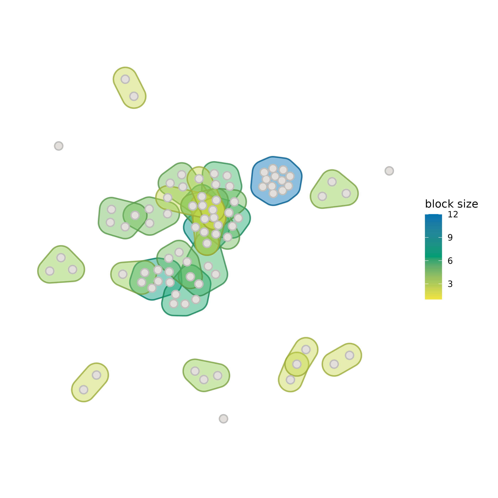
The decision 125-260 on data retention has the same structure with larger blocks.
retention <- hg_subset(blocks_all, where = c(citing = "125-260"))
retention
#> Hypergraph: 56 nodes, 100 hyperedges
#> Size distribution:
#> size_1 : 61
#> size_2 : 15
#> size_3 : 14
#> size_4 : 8
#> size_6 : 1
#> size_7 : 1
#> Source: group membership (member = member, group = edge)
plot(retention, color_by = "size", labels = FALSE, padding = 0.035,
legend_title = "block size")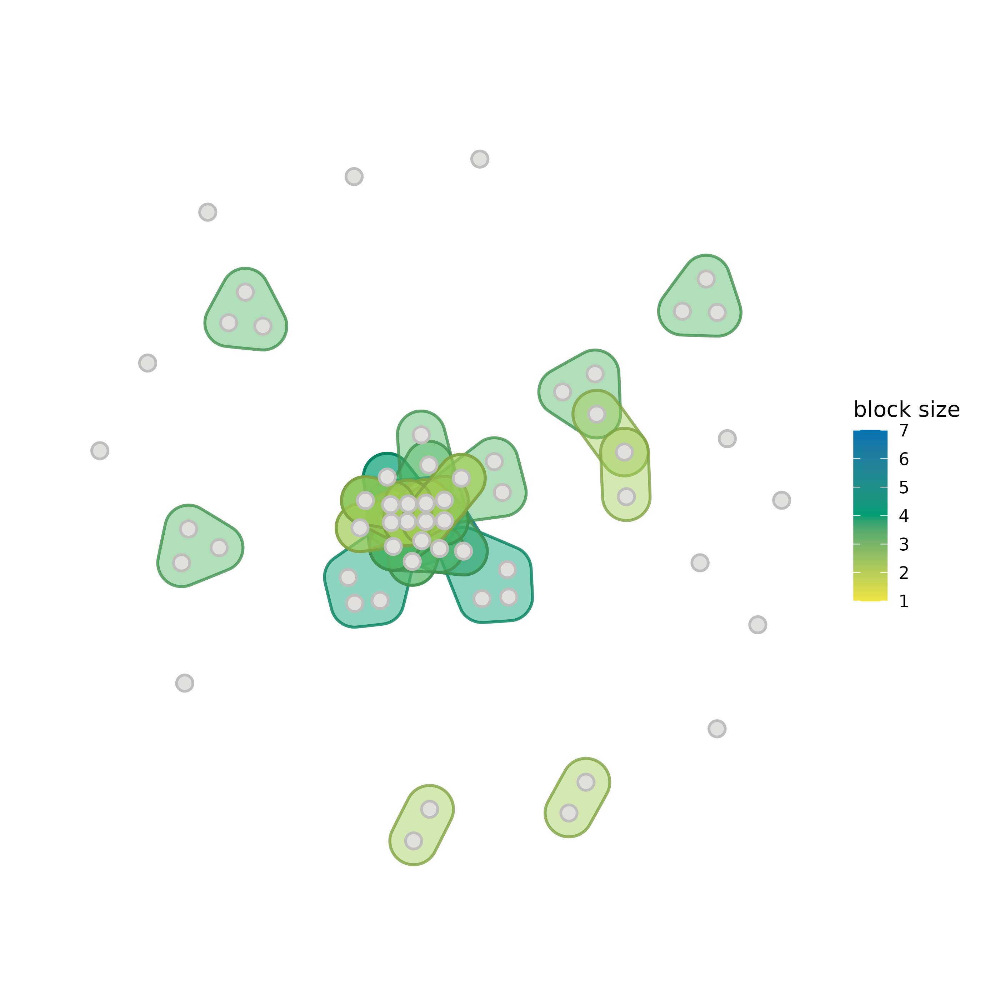
Growth
hg_growth() counts, at every event time, the nodes and
hyperedges present: the hyperedges as they are, the distinct member
sets, and the memberships. With mode = "cumulative" every
count is cumulative and a decision enters at its own date, the paper’s
growing citation network. The result is a time series table whose
time column is on the hypergraph’s clock, days since the
first decision; the plot method draws it on the calendar.
growth_blocks <- hg_growth(blocks, mode = "cumulative")
tail(growth_blocks, 3)
#> time n_nodes n_edges n_edges_distinct n_memberships
#> 2024 25722 3615 46167 13505 77029
#> 2025 25748 3616 46173 13506 77051
#> 2026 25762 3618 46257 13539 77284Its plot() method draws each count against time, the
paper’s Figure 4a.
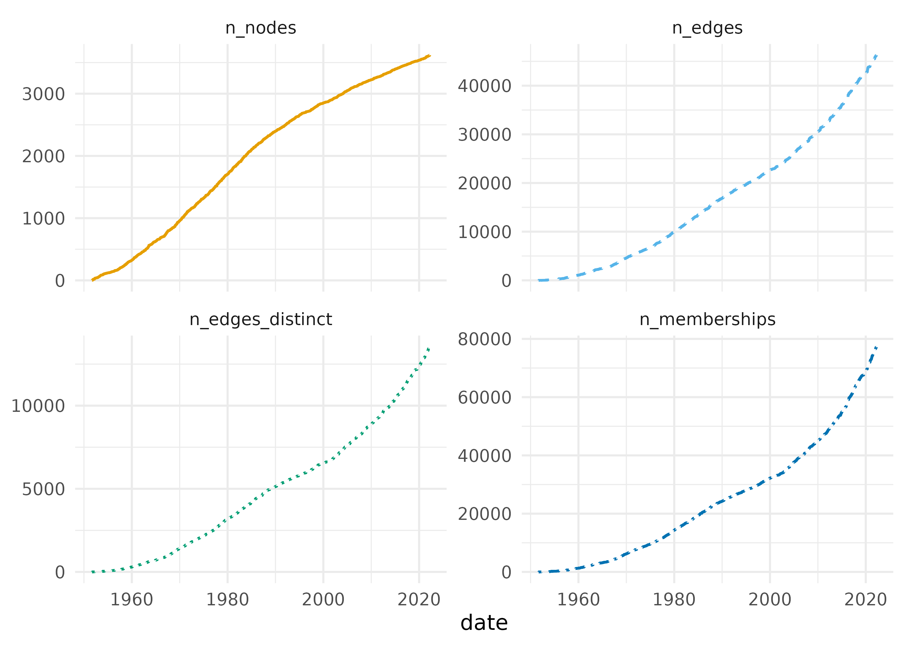
hg_edges() on a temporal hypergraph evaluates every
snapshot requested with at (dates are read on the
hypergraph’s clock), and what = "distribution" returns the
empirical distribution of a hyperedge measure with its complementary
cumulative share, one block of rows per date. The cumulative mode again
gives the network as it stood on each date.
census_dates <- as.Date(c("1960-12-31", "1975-12-31", "1990-12-31",
"2005-12-31", "2020-12-31"))
sizes_by_date <- hg_edges(blocks, what = "distribution", at = census_dates,
snapshot_mode = "cumulative")
head(sizes_by_date)
#> time value n proportion ccdf
#> 1 3401 1 1121 0.853769992 1.000000000
#> 2 3401 2 120 0.091393755 0.146230008
#> 3 3401 3 39 0.029702970 0.054836253
#> 4 3401 4 21 0.015993907 0.025133283
#> 5 3401 5 6 0.004569688 0.009139375
#> 6 3401 6 2 0.001523229 0.004569688Its plot() draws one curve per date, the paper’s Figure
4b; the distribution shifts to the right as blocks grow longer.
plot(sizes_by_date)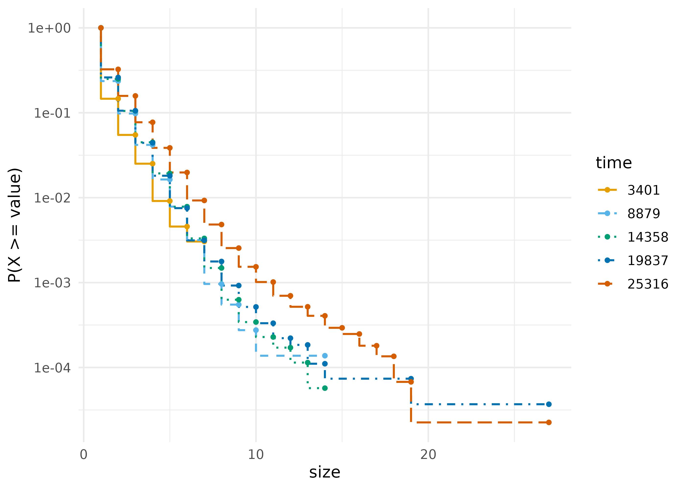
The s argument counts, for each hyperedge, the other
hyperedges that share at least s nodes with it. The paper’s
Figure 4c draws that count for s = 2, 3, 4 on the
multi-hypergraph.
intersections <- hg_edges(blocks_all, s = 2:4, what = "distribution",
measure = "n_incident_edges")
plot(intersections)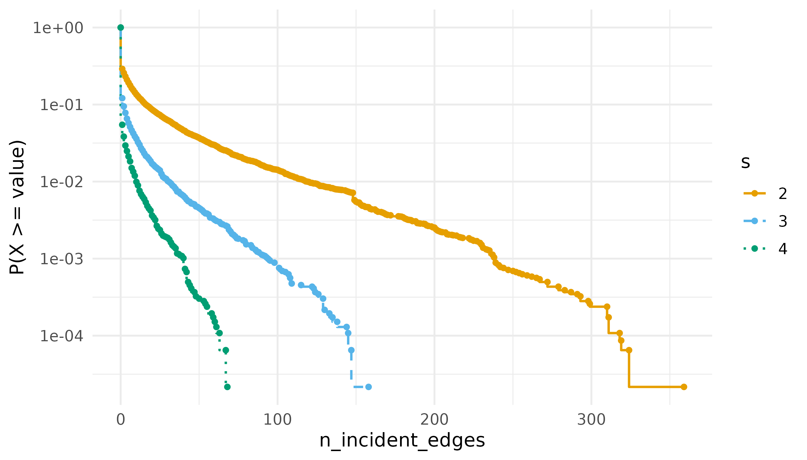
multiedges = FALSE in the snapshot collapses repeated
member sets, the binary hypergraph, on which the same counts are
smaller.
blocks_binary <- hypergraph_snapshot(blocks, mode = "cumulative", multiedges = FALSE)
intersections_binary <- hg_edges(blocks_binary, s = 2:4, what = "distribution",
measure = "n_incident_edges")
plot(intersections_binary)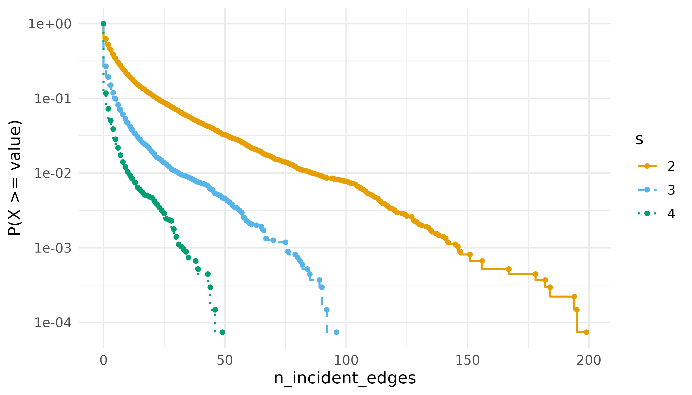
Arbitrators and tribunals over time
hg_measures() with what = "distribution"
gives the degree distributions of the paper’s Figure 5a. The number of
tribunals an arbitrator sits on is the hyperdegree; one
arbitrator, Brigitte Stern, sits on 94 tribunals and accounts for the
tail.
tribunal_counts <- hg_measures(tribunals_all, what = "distribution",
measure = "hyperdegree")
tail(tribunal_counts, 3)
#> value n proportion ccdf
#> 33 43 1 0.002267574 0.006802721
#> 34 50 1 0.002267574 0.004535147
#> 35 94 1 0.002267574 0.002267574
plot(tribunal_counts)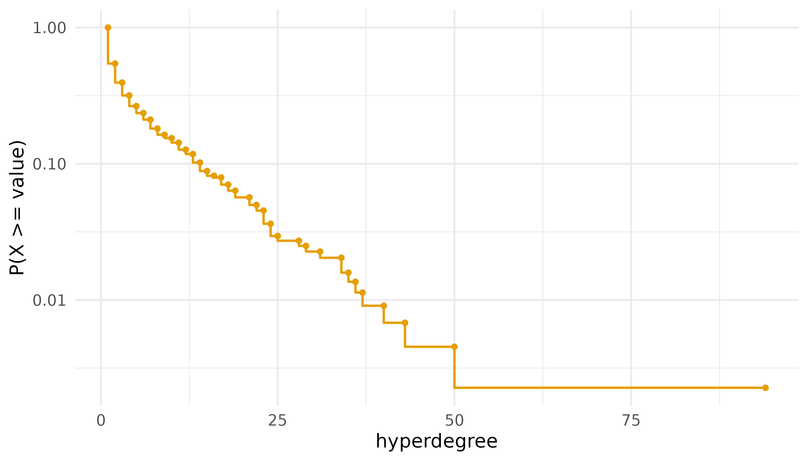
For interval data hg_growth() reports the active counts
and, in the _cumulative columns, the counts of a static
model that never retires a tribunal.
growth_tribunals <- hg_growth(tribunals)
tail(growth_tribunals, 3)
#> time n_nodes n_edges n_edges_distinct n_memberships n_nodes_cumulative
#> 1074 17760 212 210 208 630 441
#> 1075 17777 212 209 207 627 441
#> 1076 17782 210 208 206 624 441
#> n_edges_cumulative n_edges_distinct_cumulative
#> 1074 742 722
#> 1075 742 722
#> 1076 742 722The paper’s Figure 5b: cases grow about twice as fast as active cases, and arbitrators about three times as fast as active arbitrators.
plot(growth_tribunals,
columns = c("n_nodes", "n_edges", "n_nodes_cumulative", "n_edges_cumulative"),
facets = FALSE)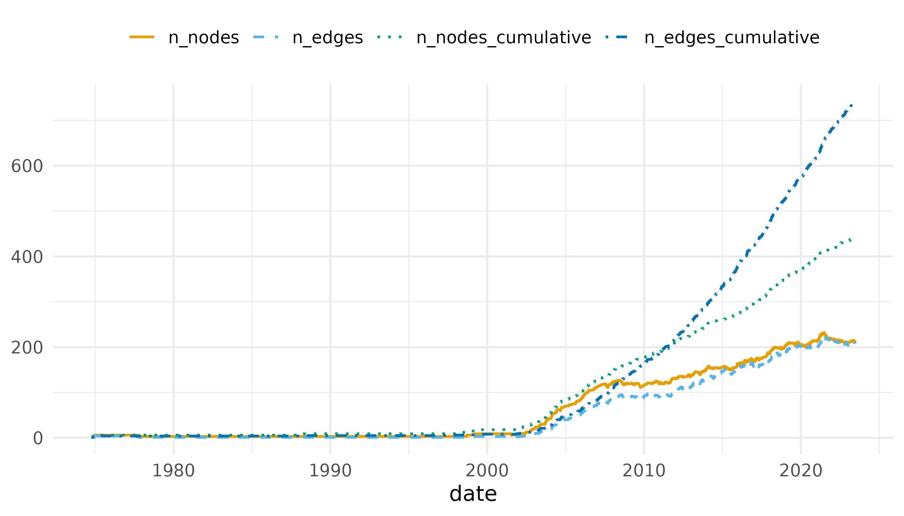
hg_edges() with what = "summary" returns,
per snapshot, the mean and quartiles of a hyperedge measure. The number
of arbitrators within one hop of a tribunal is
n_neighbors.
neighbourhood <- hg_edges(tribunals, what = "summary", measure = "n_neighbors")
tail(neighbourhood, 3)
#> time n_edges mean sd min q25 median q75 max
#> 1074 17760 210 24.60000 11.06449 0 17 24 32 54
#> 1075 17777 209 24.28230 10.81762 0 17 24 32 52
#> 1076 17782 208 24.26923 10.79920 0 17 24 32 52The paper’s Figure 5c: the mean and median stay close together, unlike the node degrees above.
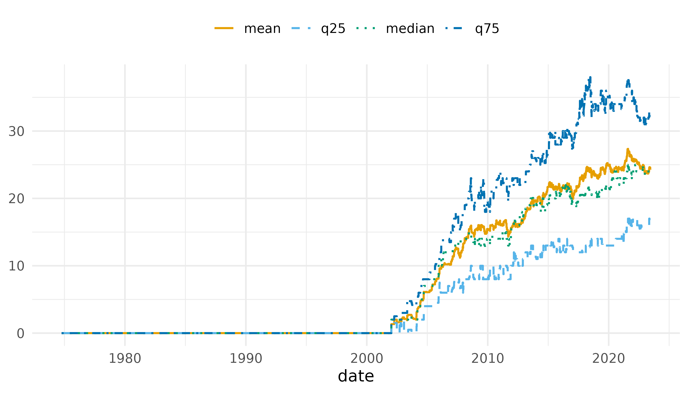
components = TRUE adds the connectivity of the active
hypergraph at each time: the number of components, the share of active
arbitrators in the largest, and its diameter. Since 2007 the largest
component holds more than 90 percent of the active arbitrators and its
diameter stays between 6 and 9, the observation the paper makes in
prose.
connectivity <- hg_growth(tribunals, components = TRUE)
tail(connectivity, 3)
#> time n_nodes n_edges n_edges_distinct n_memberships n_nodes_cumulative
#> 1074 17760 212 210 208 630 441
#> 1075 17777 212 209 207 627 441
#> 1076 17782 210 208 206 624 441
#> n_edges_cumulative n_edges_distinct_cumulative n_components
#> 1074 742 722 4
#> 1075 742 722 4
#> 1076 742 722 4
#> largest_component diameter
#> 1074 0.9575472 7
#> 1075 0.9575472 7
#> 1076 0.9571429 7Repeated collaborations
hg_null_test() compares a statistic with its
distribution under a null that preserves every node’s degree and every
hyperedge’s size. The repeated_edges statistic counts
tribunals whose member set already occurred, the paper’s repeated
collaboration trios, and repeated_pairs the pairs of
arbitrators counted with multiplicity minus the distinct pairs, its
repeated collaboration pairs. method = "assignment" is the
paper’s null: arbitrators in decreasing degree each choose their cases
without replacement among the cases with a free seat. The 357 repeated
pairs and 20 repeated trios lie far above the null (the paper reports
z-scores of 4.81 and 10.40 from 1,000 draws).
hg_null_test(tribunals_all, statistic = c("repeated_pairs", "repeated_edges"),
method = "assignment", n = 999, seed = 1)
#> statistic observed null_mean null_lo null_hi z p_value n
#> 1 repeated_pairs 357 299.438438 275 323 4.666061 0.001 999
#> 2 repeated_edges 20 2.612613 0 6 11.149553 0.001 999
#> method
#> 1 assignment
#> 2 assignmentMethods
Hyperedge centralities
The centrality analysis of the paper runs on the tribunals active on
the last observed date. hypergraph_snapshot() with
mode = "active" returns them, and
multiedges = FALSE collapses two tribunals with the same
three members into one hyperedge.
observation_date <- as.Date("2023-06-15")
active <- hypergraph_snapshot(tribunals, at = observation_date,
mode = "active", multiedges = FALSE)
active
#> Hypergraph: 208 nodes, 205 hyperedges
#> Size distribution:
#> size_3 : 205
#> Source: group membership (member = member, group = edge)hg_edge_centrality() builds the s-line graph, in which
two hyperedges are adjacent when they share at least s
nodes, and computes shortest-path betweenness and closeness of the
hyperedges on it with the NetworkX normalisation the paper uses.
top = 10 keeps the ten most central cases.
top_betweenness <- hg_edge_centrality(active, s = 1, measure = "betweenness",
top = 10)
top_betweenness
#> edge s measure value
#> 1 ARB/17/21 1 betweenness 0.02654013
#> 2 ARB/19/27 1 betweenness 0.02499207
#> 3 ARB/18/23 1 betweenness 0.02262065
#> 4 ARB/16/20 1 betweenness 0.02213551
#> 5 ARB/20/19 1 betweenness 0.02206388
#> 6 ARB/18/43 1 betweenness 0.02137011
#> 7 ARB/21/5 1 betweenness 0.02136420
#> 8 ARB/20/53 1 betweenness 0.01910242
#> 9 ARB/20/13 1 betweenness 0.01904040
#> 10 ARB/16/39 1 betweenness 0.01796559hg_subset() takes that table and cuts the snapshot down
to those cases.
central_tribunals <- hg_subset(active, edges = top_betweenness)
central_tribunals
#> Hypergraph: 16 nodes, 10 hyperedges
#> Size distribution:
#> size_3 : 10
#> Source: group membership (member = member, group = edge)plot() draws them coloured by economic sector: the
paper’s Figure 6a. The names are the archive’s.
plot(central_tribunals, color_by = "economic_sector",
legend_title = "economic sector", label_size = 2.8)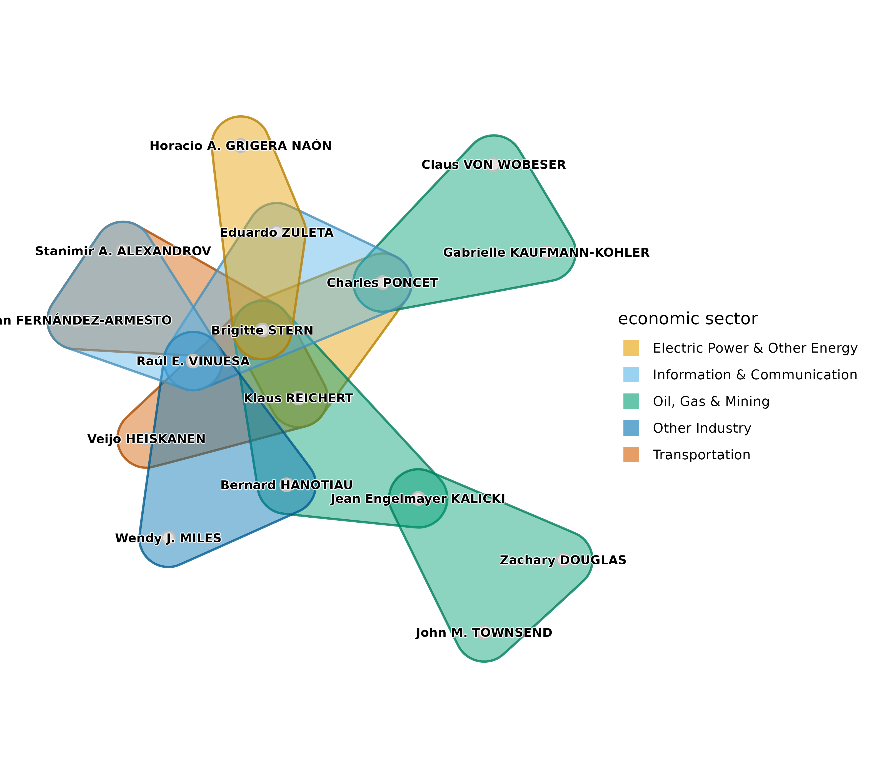
Closeness ranks a different set of tribunals (Figure 6b).
top_closeness <- hg_edge_centrality(active, s = 1, measure = "closeness",
top = 10)
top_closeness
#> edge s measure value
#> 1 ARB/18/23 1 closeness 0.4865949
#> 2 ARB/17/21 1 closeness 0.4772147
#> 3 ARB/20/19 1 closeness 0.4760676
#> 4 ARB/21/52 1 closeness 0.4715336
#> 5 ARB/16/39 1 closeness 0.4681894
#> 6 ARB/21/5 1 closeness 0.4616413
#> 7 ARB/22/20 1 closeness 0.4616413
#> 8 ARB/18/32 1 closeness 0.4605677
#> 9 ARB/19/27 1 closeness 0.4573767
#> 10 ADHOC/17/1 1 closeness 0.4552738
close_tribunals <- hg_subset(active, edges = top_closeness)
plot(close_tribunals, color_by = "economic_sector",
legend_title = "economic sector", label_size = 2.8)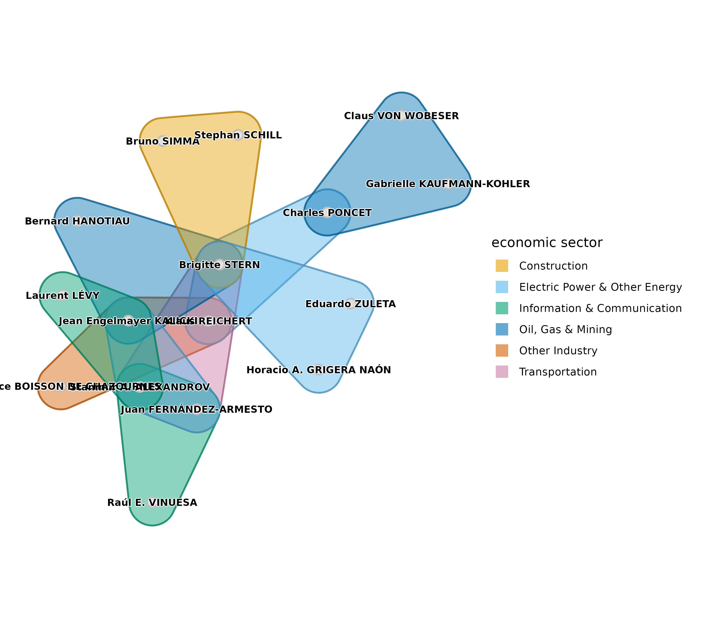
The static aggregate ranks tribunals that never overlapped in time.
On the seven most central cases by closeness in the aggregate,
linetype_by outlines the concluded cases differently from
the pending ones, the distinction the paper’s Figure 6d draws with
dashed and solid lines.
top_aggregate <- hg_edge_centrality(tribunals_all, s = 1, measure = "closeness",
top = 7)
top_aggregate
#> edge s measure value
#> 1 ARB/15/5 1 closeness 0.5456950
#> 2 ARB/17/21 1 closeness 0.5448794
#> 3 ARB/14/5 1 closeness 0.5424469
#> 4 ARB/10/21 1 closeness 0.5392371
#> 5 ARB/12/35 1 closeness 0.5388386
#> 6 ARB/10/20 1 closeness 0.5376464
#> 7 ARB/15/32 1 closeness 0.5372502
aggregate_tribunals <- hg_subset(tribunals_all, edges = top_aggregate)
plot(aggregate_tribunals, color_by = "economic_sector", linetype_by = "is_concluded",
legend_title = "economic sector", label_size = 2.8)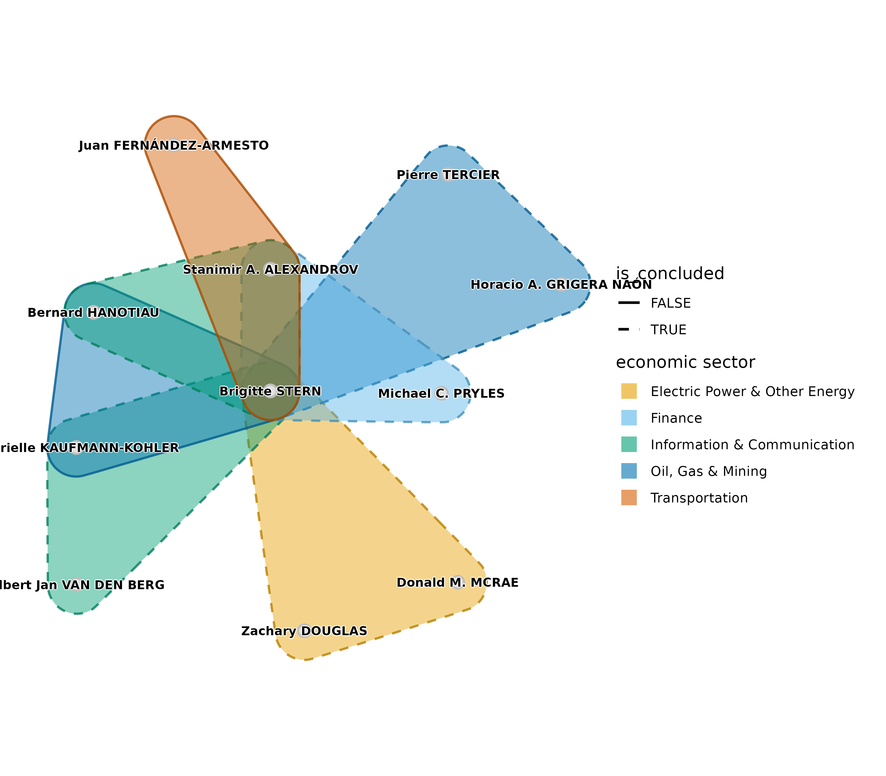
The paper’s Figure 6c ranks the edges of the temporal graph by
ordinary edge betweenness; that is a graph computation on the clique
projection, hg_project(active, method = "clique"), and is
left to a graph engine.
Motifs
hg_motifs() counts the three induced four-node motifs of
a 3-uniform hypergraph, Y (two of the four possible triples), T (three)
and O (all four), and draws configuration-model null hypergraphs by the
pairwise reshuffle of HypergraphX, preserving degrees and cardinalities.
The result holds the observed count, the null mean and standard
deviation, a z-score and an empirical p-value per motif. On the
aggregate hypergraph the Y motif occurs 478 times against a null mean
near 290, and the T motif 7 times where the null almost never produces
one; the O motif never occurs. The paper uses 1,000 draws; 300 are used
here.
motifs_aggregate <- hg_motifs(tribunals_all, n = 300, seed = 1)
motifs_aggregate
#> motif observed null_mean null_sd z p_value delta
#> 1 Y 478 291.6066667 20.3490857 9.159789 0.003322259 0.2409407
#> 2 T 7 0.7033333 0.8095197 7.778274 0.003322259 0.5380234
#> 3 O 0 0.0000000 0.0000000 NA 1.000000000 0.0000000
#> normalized_delta n method
#> 1 0.4087138 300 configuration_mcmc
#> 2 0.9126626 300 configuration_mcmc
#> 3 0.0000000 300 configuration_mcmcplot() draws the null distribution with the observed
count: the paper’s Figure 7c.
plot(motifs_aggregate)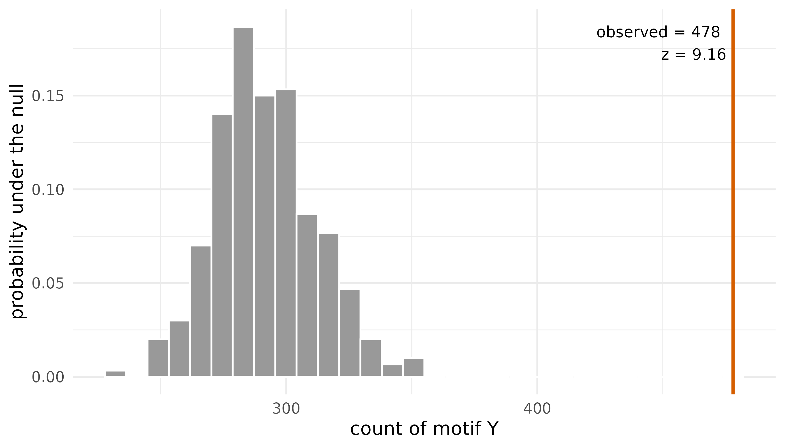
The last snapshot of the temporal hypergraph has far fewer Y motifs, 48, and a smaller but still clear excess over its null (Figure 7b).
motifs_active <- hg_motifs(active, n = 300, seed = 1)
motifs_active
#> motif observed null_mean null_sd z p_value delta
#> 1 Y 48 25.33000000 5.2543093 4.3145537 0.003322259 0.293159188
#> 2 T 0 0.01333333 0.1146977 -0.1162476 1.000000000 -0.003322259
#> 3 O 0 0.00000000 0.0000000 NA 1.000000000 0.000000000
#> normalized_delta n method
#> 1 0.99993579 300 configuration_mcmc
#> 2 -0.01133188 300 configuration_mcmc
#> 3 0.00000000 300 configuration_mcmc
plot(motifs_active)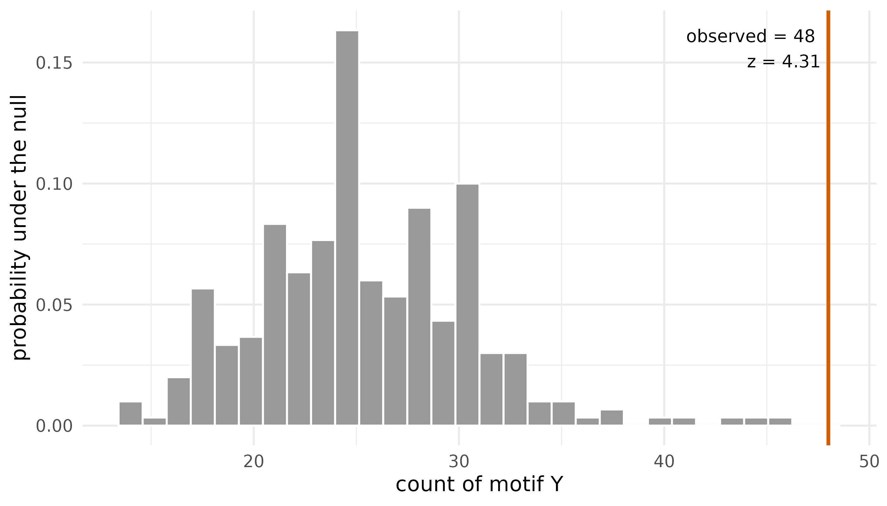
Communities across representations
The paper clusters the GFCC data eight ways. Four representations are
hypergraph-derived: the association graph of hg_project(),
in which a block of size |e| gives each of its member pairs the weight 1
/ (|e| - 1), on the binary (bh) or multi (mh)
hypergraph, with (bhs, mhs) or without
self-association, the term that joins the citing decision to the
decisions it cites. Four are classic: the citation graph, binary
(bg) or multi (mg), directed or undirected
(bgu, mgu). The clustering uses backward
citations only, those whose citing decision is later than the cited one,
so the temporal hypergraph is rebuilt from that subset of the citation
table.
backward_citations <- subset(gfcc_citations, date_citing > date_cited)
backward <- temporal_hypergraph(
backward_citations, actor = "cited", group = "block",
time = "date_citing", nodes = gfcc_decisions, sparse = TRUE
)
backward_all <- hypergraph_snapshot(backward, mode = "cumulative")
backward_all
#> Hypergraph: 3618 nodes, 46165 hyperedges
#> Size distribution:
#> size_1 : 30795
#> size_2 : 7759
#> size_3 : 3787
#> size_4 : 1880
#> size_5 : 922
#> size_6 : 513
#> size_7 : 220
#> size_8 : 130
#> size_9 : 61
#> size_10 : 35
#> size_11 : 26
#> size_12 : 12
#> size_13 : 6
#> size_14 : 5
#> size_15 : 2
#> size_16 : 3
#> size_17 : 3
#> size_18 : 3
#> size_19 : 2
#> size_27 : 1
#> Source: group membership (member = member, group = edge)hg_communities() runs Infomap repeatedly on the chosen
projection, compares every pair of partitions with adjusted mutual
information and keeps the run with the largest summed AMI as the medoid.
The paper uses 50 seeds with 100 trials each; five seeds with five
trials are used here to keep the vignette quick. The eight calls differ
only in the projection they ask for.
communities_bg <- hg_communities(backward_all, n_runs = 5, trials = 5,
method = "citation", edge_source = "citing",
duplicate_edges = "collapse", directed = TRUE)
communities_bgu <- hg_communities(backward_all, n_runs = 5, trials = 5,
method = "citation", edge_source = "citing",
duplicate_edges = "collapse")
communities_mg <- hg_communities(backward_all, n_runs = 5, trials = 5,
method = "citation", edge_source = "citing",
directed = TRUE)
communities_mgu <- hg_communities(backward_all, n_runs = 5, trials = 5,
method = "citation", edge_source = "citing")
communities_bh <- hg_communities(backward_all, n_runs = 5, trials = 5,
duplicate_edges = "collapse")
communities_bhs <- hg_communities(backward_all, n_runs = 5, trials = 5,
duplicate_edges = "collapse",
self_association = TRUE, edge_source = "citing")
communities_mh <- hg_communities(backward_all, n_runs = 5, trials = 5)
communities_mhs <- hg_communities(backward_all, n_runs = 5, trials = 5,
self_association = TRUE, edge_source = "citing")
communities_mhs
#> Hypergraph Infomap ensemble: 3618 nodes, 5 runs
#> AMI medoid: run 2 (seed 2), 450 communitieshg_compare_communities() sets the fits side by side.
With the hypergraph passed as hg, every medoid is also
scored on its own projection. The summary counts the communities,
singletons and the balance between the two largest clusters of each
medoid. The association graphs without self-association leave hundreds
of uncited decisions as singletons; with self-association those
decisions join the clusters of the decisions they cite, and the largest
clusters stay balanced.
comparison <- hg_compare_communities(
bg = communities_bg, bgu = communities_bgu, mg = communities_mg,
mgu = communities_mgu, bh = communities_bh, bhs = communities_bhs,
mh = communities_mh, mhs = communities_mhs, hg = backward_all,
edge_source = "citing"
)
comparison
#> Community comparison across 8 representations: bg, bgu, mg, mgu, bh, bhs, mh, mhs
#> model medoid_seed n_runs n_communities n_singletons n_nontrivial largest
#> bg 1 5 362 221 141 284
#> bgu 1 5 330 216 114 363
#> mg 2 5 416 229 187 96
#> mgu 5 5 404 216 188 132
#> bh 2 5 874 664 210 120
#> bhs 5 5 421 216 205 101
#> mh 4 5 902 664 238 63
#> mhs 2 5 450 216 234 102
#> second balance
#> 135 0.4753521
#> 190 0.5234160
#> 94 0.9791667
#> 92 0.6969697
#> 91 0.7583333
#> 89 0.8811881
#> 62 0.9841270
#> 87 0.8529412plot() draws the cluster-size distributions, the paper’s
Figure 8b.
plot(comparison)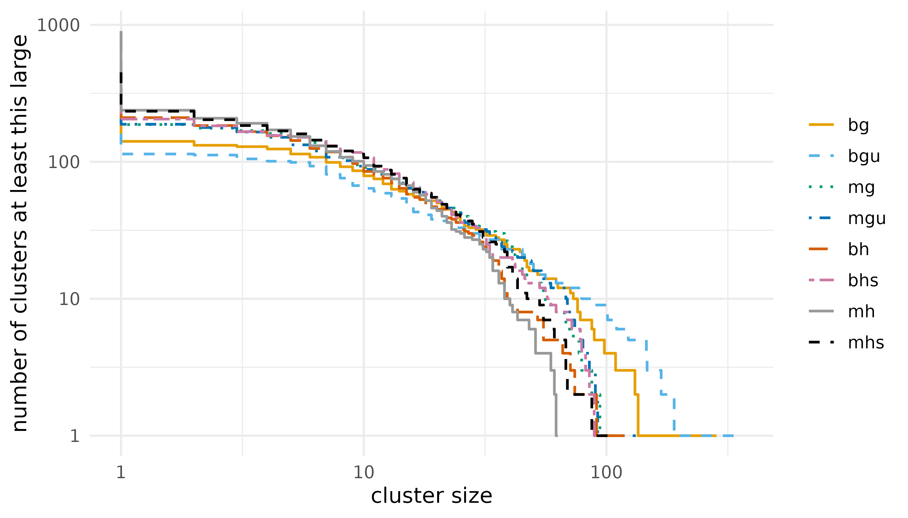
The similarity table holds the AMI, ARI and NMI between every pair of medoids.
similarity <- as.data.frame(comparison, what = "similarity")
head(similarity)
#> model_a model_b n_nodes ami ari nmi
#> 1 bg bgu 3618 0.6145999 0.4264076 0.7363186
#> 2 bg mg 3618 0.6701875 0.4294139 0.7969289
#> 3 bg mgu 3618 0.5943063 0.3773468 0.7469767
#> 4 bg bh 3618 0.4515834 0.2696700 0.7035163
#> 5 bg bhs 3618 0.5512366 0.3382037 0.7261486
#> 6 bg mh 3618 0.4247086 0.2062517 0.6971605plot(what = "similarity") is the paper’s Figure 8c with
AMI below and ARI above the diagonal. Clusterings of hypergraph-derived
representations agree more with each other than with those of the
classic graphs.
plot(comparison, what = "similarity")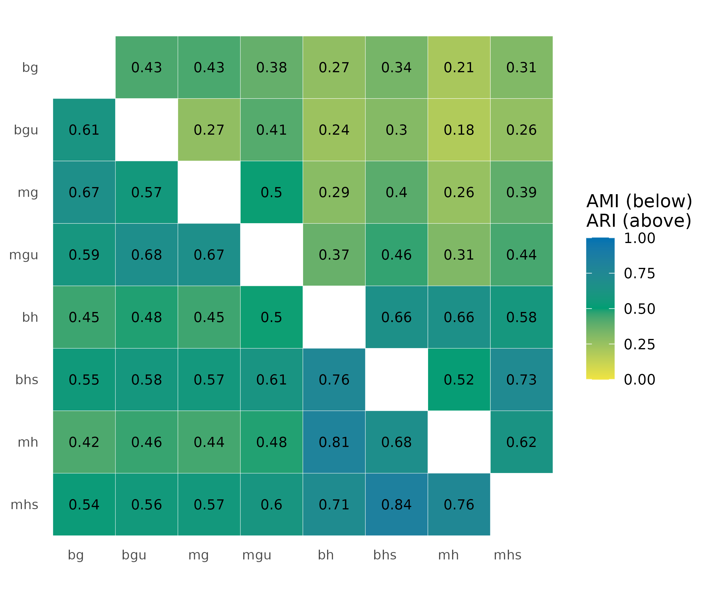
The quality table holds the graph-partition diagnostics of the paper for each medoid on its own projection: coverage, weighted coverage, performance, modularity, and the worst community conductance.
quality <- as.data.frame(comparison, what = "quality")
quality
#> model coverage weighted_coverage performance modularity conductance
#> 1 bg 0.3889722 0.3889722 0.9805861 0.3523059 1.0000000
#> 2 bgu 0.4713374 0.4713374 0.9725865 0.4197613 0.8881988
#> 3 mg 0.3087170 0.4933214 0.9882521 0.4716520 1.0000000
#> 4 mgu 0.3582378 0.5497558 0.9874580 0.5251639 0.8372881
#> 5 bh 0.4344190 0.5914135 0.9924775 0.5680416 0.7711864
#> 6 bhs 0.3167942 0.5720922 0.9879647 0.5521826 0.8374632
#> 7 mh 0.3769212 0.6147573 0.9937396 0.5950959 0.8333333
#> 8 mhs 0.2904028 0.6090068 0.9887366 0.5882855 0.8590284
#> n_communities
#> 1 362
#> 2 330
#> 3 416
#> 4 404
#> 5 874
#> 6 421
#> 7 902
#> 8 450What the reproduction covers
Every figure and table of the paper that concerns the hypergraphs is
produced above from the released data: Table 1 by
summary(), Table 2 by hg_representations(),
Figure 3 by hg_subset() and plot(), Figures 4
and 5 by hg_growth(), hg_edges() and
hg_measures(), Figure 6 by
hg_edge_centrality(), Figure 7 by hg_motifs(),
Figure 8 by hg_communities() and
hg_compare_communities(), and the repeated collaboration
test by hg_null_test(). The full-data runner
benchmarks/run_legal_hypergraphs_reproduction.R checks the
association graphs, the archived medoids and the Figure 6 centralities
against the authors’ archived results to numerical tolerance: the active
betweenness ranking is led by ARB/17/21 at 0.02654013 and the aggregate
closeness ranking by ARB/15/5 at 0.54805703, and the motif census of the
aggregate is Y = 478, T = 7, O = 0.
References
Coupette, C., Hartung, D., and Katz, D. M. (2024). Legal hypergraphs. Philosophical Transactions of the Royal Society A, 382(2270), 20230141.
Coupette, C., Hartung, D., and Katz, D. M. (2024). Legal hypergraphs (Software). Zenodo, record 8081507.
Lotito, Q. F., Contisciani, M., De Bacco, C., Di Gaetano, L., Gallo, L., Montresor, A., Musciotto, F., Ruggeri, N., and Battiston, F. (2023). Hypergraphx: a library for higher-order network analysis. Journal of Complex Networks, 11(3), cnad019.
Rosvall, M., and Bergstrom, C. T. (2008). Maps of random walks on complex networks reveal community structure. Proceedings of the National Academy of Sciences, 105(4), 1118-1123.